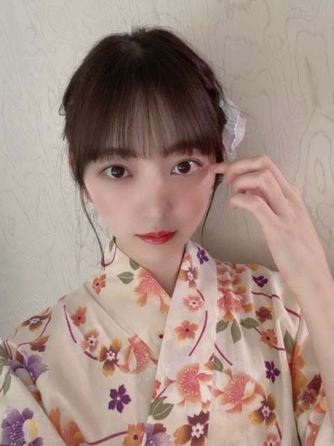
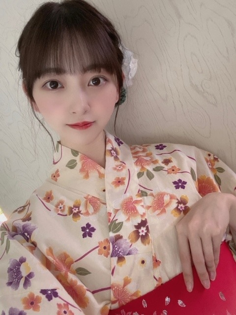
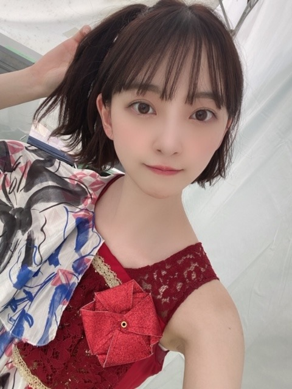
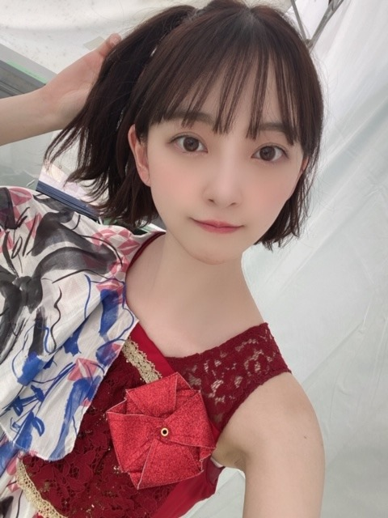

2020/0815Sat梨があるところは安全
夏ですね〜

わたしはお家でもこの盆踊りを
踊って夏感じてます！
みなさんもぜひ覚えて一緒に踊りましょ〜♩

♡

CDTV ライブライブもありがとうございました

CDTV ライブライブもありがとうございました
おんぷちゃんヘアしました
みなさんが好きって言ってくれるから
したのー^o^
絢音もいつも褒めてくれる♩
またします！
久しぶりの 海原〜 披露で
ちょっぴり緊張しました。笑
またいつか披露できたらいいなぁ
フロントに立たせていただけた
唯一の夏曲なので大事にしたいです
↑↓両方 her lip to の♡
今日は18時から
MUSIC FAIRに出ます
みてね〜
質問返しします〜
質問ください
では
2020/08/15 16:48
コメント(624)
みおな〜ブログの浴衣可愛すぎ〜
今年は浴衣が着れないと思うと何だか着たくなるね…
最近は音楽番組で沢山見ることが出来て嬉しい！
呉々も体調にはお気をつけて…
★★質問★★
日向坂の推しメン教えて〜！
日向坂で好きな曲、よく聞く曲とかある〜？
日向坂で仲いい子いる〜？
さくちゃんとのエピソード聞きたいな！
毎日暑いけど頑張ろうね！
今年は浴衣が着れないと思うと何だか着たくなるね…
最近は音楽番組で沢山見ることが出来て嬉しい！
呉々も体調にはお気をつけて…
★★質問★★
日向坂の推しメン教えて〜！
日向坂で好きな曲、よく聞く曲とかある〜？
日向坂で仲いい子いる〜？
さくちゃんとのエピソード聞きたいな！
毎日暑いけど頑張ろうね！
ブログ更新有難う
おんぷちゃんへア可愛い～！
いつか、ハーフツインやって欲しいな！
未央奈ちゃん似合いそう！！
質問です！
夢を叶えるには何が必要だとおもいますか？
思いと想いの違いってなんだとおもう？
腹筋つけるには何するのが一番良いのかな？
運動不足で太ってきてる、、
9月の身体測定までに何とかしたい、、笑
未央奈ちゃん目指して頑張ります！
好きなお笑い芸人さんいる？
前回の質問答えてくださって有難うございました！
これからも応援してます！
さく
おんぷちゃんへア可愛い～！
いつか、ハーフツインやって欲しいな！
未央奈ちゃん似合いそう！！
質問です！
夢を叶えるには何が必要だとおもいますか？
思いと想いの違いってなんだとおもう？
腹筋つけるには何するのが一番良いのかな？
運動不足で太ってきてる、、
9月の身体測定までに何とかしたい、、笑
未央奈ちゃん目指して頑張ります！
好きなお笑い芸人さんいる？
前回の質問答えてくださって有難うございました！
これからも応援してます！
さく
ブログ更新ありがと〜
ライブライブ、盆踊り、見ました‼︎
すごい良かったよ〜
ライブライブ、盆踊り、見ました‼︎
すごい良かったよ〜
かわいすぎます♥️
ブログ更新ありがとう！
質問
未央奈の得意料理は？
質問
未央奈の得意料理は？
未央奈ちゃんブログ更新ありがとうごさいます！！
MUSIC FAIR、CDTV、めっちゃ可愛かったです！CDTVでジコチューが披露された時、自分めっちゃ嬉しかったんです！「ｳｱﾞｱﾞｱﾞｱﾞｱﾞジコチューだぁぁぁぁぁあ！」ってめっちゃ喜びました！(普通に叫んじゃった笑)
えっと、未央奈ちゃんに質問です！(急に質問する人笑)
今、ハマってる曲ってなんですか？
それじゃあ、またブログ更新した時に！
ﾊﾞｲﾊﾞｲ(ヾ(´・ω・｀)
MUSIC FAIR、CDTV、めっちゃ可愛かったです！CDTVでジコチューが披露された時、自分めっちゃ嬉しかったんです！「ｳｱﾞｱﾞｱﾞｱﾞｱﾞジコチューだぁぁぁぁぁあ！」ってめっちゃ喜びました！(普通に叫んじゃった笑)
えっと、未央奈ちゃんに質問です！(急に質問する人笑)
今、ハマってる曲ってなんですか？
それじゃあ、またブログ更新した時に！
ﾊﾞｲﾊﾞｲ(ヾ(´・ω・｀)
堀ちゃん『劇場』観たんですね。「梨のあるところが一番安全です」あのシーン良かったですよね、自分も好きです。
堀ちゃんブログ更新ありがとうございます。
堀ちゃん浴衣着るとめっちゃ可愛いです。
今月の浴衣の生写真楽しみにしてます。
浴衣の生写真持ってないのでぜひてに入れます。
暑い中お仕事お疲れ様です。
体調は大丈夫ですか？
自分は暑さにやられています。
毎日暑い中お仕事頑張っています。
体調を崩さないようにお仕事頑張って下さい。
自分も頑張ります。
これからのブログ楽しみにしてます。
堀ちゃん浴衣着るとめっちゃ可愛いです。
今月の浴衣の生写真楽しみにしてます。
浴衣の生写真持ってないのでぜひてに入れます。
暑い中お仕事お疲れ様です。
体調は大丈夫ですか？
自分は暑さにやられています。
毎日暑い中お仕事頑張っています。
体調を崩さないようにお仕事頑張って下さい。
自分も頑張ります。
これからのブログ楽しみにしてます。
浴衣姿似合ってて可愛すぎる！
もし1日入れ替われるとしたらどのメンバーと入れ替わりたい？
もし1日入れ替われるとしたらどのメンバーと入れ替わりたい？
未央奈お疲れ様！！
ブログ更新ありがとう。
CDTV暑い中お疲れ様と髪型似合ってたよ！！
盆踊り懐かしいな〜。
＜ 質問＞
質問＞
夏はかき氷派？それともアイス派？
ブログ更新ありがとう。
CDTV暑い中お疲れ様と髪型似合ってたよ！！
盆踊り懐かしいな〜。
＜
夏はかき氷派？それともアイス派？
更新ありがとうございます！
盆踊り、小さい頃からすごく好きです！
小4からは太鼓側のため踊ることは少ないけど雰囲気が好きです。
トトロ見ましたか？来週はコクリコ坂ですね！
〜QUESTION〜
最近プリン会どんな感じですかー？
次回も楽しみにしてます！！
盆踊り、小さい頃からすごく好きです！
小4からは太鼓側のため踊ることは少ないけど雰囲気が好きです。
トトロ見ましたか？来週はコクリコ坂ですね！
〜QUESTION〜
最近プリン会どんな感じですかー？
次回も楽しみにしてます！！
かわいいですね？（質問）
こんにちわわわʕ•ᴥ•ʔ
お久しぶりになってしまいました…
最近は毎日「Route246」を聴いて気分を上げています♬
TikTokやTwitterに上がっている乃木坂46の皆様のダンスを観ていたら、サビの「誰も~」の部分を踊れるようになりました~！
ダンスはあまり上手ではないので、頑張って練習したいと思います♬
今日、先週に頼んだ「しあわせの保護色」グッズが届きました！
嬉しい！
初めてofficial siteでお買い物をしたのですが、今回は個別クリアファイルと個別ミニタオルを購入しました！
他に、「真夏のドリームくじ」でしあわせの保護色のトートバッグを購入したのですが、まだ届かないので、楽しみにのんびり待ちたいと思います◎
届いたら早く、学校で使いたいっ！
くじ、当たるかな~？？
今は夏休み中です。。
今年は短い夏休み、、にもかかわらず大量の宿題と夏休み明けの定期考査、定期考査後の作品展の締め切り…。
全然休めません(°-°)
でも、乃木坂46の皆様が毎日更新してくださるブログに元気をもらっています！
みおにゃたんは頻繁に更新してくれるから嬉しい~！
みおにゃたんは忙しくてもファンを大切にしてくれるから(*´꒳`*)
これからも応援し続けます(^▽^)
あっ、MUSICFAIR始まっちゃった！！
質問~✿
⭐︎みおにゃたんが大好きなお猿さんとの初めての出会いはいつ、どこでですか~？？
46時間TVとかでよくみおにゃたんのお猿さんが出てくるので気になります！！(トルティーヤくん、もんぞーくんなど)
⭐︎最近のお気に入りの1枚を見せて欲しいです♬
(質問ではないですが、気が向いたら見せてください！笑)
MUSICFAIRでのお話です！
ASMR、いいですよね~˚✧₊⁎
私も音フェチです。
1番好きな音は硬めのお菓子やおせんべいの咀嚼音です♬(^▽^♬)
今日のパフォーマンスもとっても素敵でした！
私も今度音符ちゃんヘアしようかな？
それで歯、またコメントしますね~！
大好きっ。
お久しぶりになってしまいました…
最近は毎日「Route246」を聴いて気分を上げています♬
TikTokやTwitterに上がっている乃木坂46の皆様のダンスを観ていたら、サビの「誰も~」の部分を踊れるようになりました~！
ダンスはあまり上手ではないので、頑張って練習したいと思います♬
今日、先週に頼んだ「しあわせの保護色」グッズが届きました！
嬉しい！
初めてofficial siteでお買い物をしたのですが、今回は個別クリアファイルと個別ミニタオルを購入しました！
他に、「真夏のドリームくじ」でしあわせの保護色のトートバッグを購入したのですが、まだ届かないので、楽しみにのんびり待ちたいと思います◎
届いたら早く、学校で使いたいっ！
くじ、当たるかな~？？
今は夏休み中です。。
今年は短い夏休み、、にもかかわらず大量の宿題と夏休み明けの定期考査、定期考査後の作品展の締め切り…。
全然休めません(°-°)
でも、乃木坂46の皆様が毎日更新してくださるブログに元気をもらっています！
みおにゃたんは頻繁に更新してくれるから嬉しい~！
みおにゃたんは忙しくてもファンを大切にしてくれるから(*´꒳`*)
これからも応援し続けます(^▽^)
あっ、MUSICFAIR始まっちゃった！！
質問~✿
⭐︎みおにゃたんが大好きなお猿さんとの初めての出会いはいつ、どこでですか~？？
46時間TVとかでよくみおにゃたんのお猿さんが出てくるので気になります！！(トルティーヤくん、もんぞーくんなど)
⭐︎最近のお気に入りの1枚を見せて欲しいです♬
(質問ではないですが、気が向いたら見せてください！笑)
MUSICFAIRでのお話です！
ASMR、いいですよね~˚✧₊⁎
私も音フェチです。
1番好きな音は硬めのお菓子やおせんべいの咀嚼音です♬(^▽^♬)
今日のパフォーマンスもとっても素敵でした！
私も今度音符ちゃんヘアしようかな？
それで歯、またコメントしますね~！
大好きっ。
こんばんはお疲れさま☺
MUSIC FAIR 録画しました☺
堀ちゃん浴衣も似合うね✨
夏って感じで良きです☺
夏祭り行きたいね～✨
今年は夏も我慢の時。
自分で出来る予防や出来る事はやらないとね！
さてさて。
質問か～。
堀ちゃんお肉料理は何が好きかな？
あと魚料理は何が好きかな？
なんかベタでごめんね(笑)ハハハ✨
ではではまたね✨
体調ホンマに気をつけてくださいね。
ほなね、堀ちゃん☺
MUSIC FAIR 録画しました☺
堀ちゃん浴衣も似合うね✨
夏って感じで良きです☺
夏祭り行きたいね～✨
今年は夏も我慢の時。
自分で出来る予防や出来る事はやらないとね！
さてさて。
質問か～。
堀ちゃんお肉料理は何が好きかな？
あと魚料理は何が好きかな？
なんかベタでごめんね(笑)ハハハ✨
ではではまたね✨
体調ホンマに気をつけてくださいね。
ほなね、堀ちゃん☺
みおたんきゃわたん♡♡♡
こんばんは。盆踊り覚えなきゃだ！
夏ですなぁー！
おんぷちゃんヘア可愛いね。
夏ですなぁー！
おんぷちゃんヘア可愛いね。
みおなちゃん～❕
ブログ更新ありがとう！
夏祭りに乃木坂のメンバーと行ったりしますか？
ブログ更新ありがとう！
夏祭りに乃木坂のメンバーと行ったりしますか？
未央奈ちゃん、こんばんは♪
ぐるり音頭という動画を見ました。
未央奈ちゃんの他にはれんかちゃんが印象に
残りました。
未央奈ちゃんに会いに行けないので一緒には
踊れませんが、家で個人的に踊りますね。
ミュージックフェアを見ました。
未央奈ちゃんは寝るときに焚火の音を
聞いているのですね。
７～8時間聞いているのですね。
質問です。
未央奈ちゃんはコンビニに行くのですか？
ぐるり音頭という動画を見ました。
未央奈ちゃんの他にはれんかちゃんが印象に
残りました。
未央奈ちゃんに会いに行けないので一緒には
踊れませんが、家で個人的に踊りますね。
ミュージックフェアを見ました。
未央奈ちゃんは寝るときに焚火の音を
聞いているのですね。
７～8時間聞いているのですね。
質問です。
未央奈ちゃんはコンビニに行くのですか？
ブログ更新ありがとう
おんぷちゃんヘア好きー！浴衣可愛いすぎて、女子だけどキュン死しちゃった笑笑 久しぶりの未央奈ちゃんウインクでしっかり射抜かれました！MUSIC FAIRも頑張ってね、楽しみにしてます
#未央奈ちゃんに質問です！
ディズニー映画で好きなのなんですか？
遊園地で好きなアトラクションはなんですか？
お返事待ってます！体には気をつけて無理しないでね。今日も大好きです。
おんぷちゃんヘア好きー！浴衣可愛いすぎて、女子だけどキュン死しちゃった笑笑 久しぶりの未央奈ちゃんウインクでしっかり射抜かれました！MUSIC FAIRも頑張ってね、楽しみにしてます
#未央奈ちゃんに質問です！
ディズニー映画で好きなのなんですか？
遊園地で好きなアトラクションはなんですか？
お返事待ってます！体には気をつけて無理しないでね。今日も大好きです。
未央奈ちゃん♥
ミュージックフェア、観たよ。
焚き火の話しがおもしろかったよ。
「Route246」聴けてよかった。
みおな、表情が素敵てしたよ。♥
みおなちゃんとみなみさんとかれんさんとの、24時間TVの浴衣での盆踊り、メチャかわいかったよ♥
浴衣姿、メチャ素敵❗❗
みなさん揃っていて、かわいく、息があっててよかったです。♥
未央奈ちゃん 浴衣、着物の着付けは自分でするんですか？
これから、新しく始めたいことは、ありますか？
猛暑かが続くので、気をつけてくださいね。♥
ミュージックフェア、観たよ。
焚き火の話しがおもしろかったよ。
「Route246」聴けてよかった。
みおな、表情が素敵てしたよ。♥
みおなちゃんとみなみさんとかれんさんとの、24時間TVの浴衣での盆踊り、メチャかわいかったよ♥
浴衣姿、メチャ素敵❗❗
みなさん揃っていて、かわいく、息があっててよかったです。♥
未央奈ちゃん 浴衣、着物の着付けは自分でするんですか？
これから、新しく始めたいことは、ありますか？
猛暑かが続くので、気をつけてくださいね。♥
やっぱ人生で一番興奮するときって、ハンバーガー買うときだよな？
堀ちゃんは梨狩りした事はありますか？？
今まで見た盆踊りで一番可愛かった
まつ毛美容液使ってますか？
使ってたら何使ってるか知りたいです ♀️
使ってたら何使ってるか知りたいです ♀️
可愛い！
おんぷちゃんヘアーかわいい♪
質問(要望？)
堀ゾンビはしないのですか？
また新たなバージョンが見たい！！
質問(要望？)
堀ゾンビはしないのですか？
また新たなバージョンが見たい！！
普段はメガネですか？
視力も教えて下さい？
視力も教えて下さい？
未央奈ちゃんブログ頻繁に更新ありがとー^ ^
今年も浴衣姿見られたので幸せですw
盆踊りダンスの動画めっちゃ可愛いかったよー♪
質問☆
最近ヴォーギングのダンス始めました。
未央奈ちゃんが1番好きな（得意な）ジャンルのダンスは何ですか？^ ^
質問2
未央奈ちゃんは歯が白くて綺麗ですが愛用してる歯磨き粉ありますかー？？
今年も浴衣姿見られたので幸せですw
盆踊りダンスの動画めっちゃ可愛いかったよー♪
質問☆
最近ヴォーギングのダンス始めました。
未央奈ちゃんが1番好きな（得意な）ジャンルのダンスは何ですか？^ ^
質問2
未央奈ちゃんは歯が白くて綺麗ですが愛用してる歯磨き粉ありますかー？？
こんにちわ。
質問いきまぁ～す。
未央奈さんが、2期以外で、近頃、よくおしゃべりしたり、仲が良いメンバーは、誰ですか？
質問いきまぁ～す。
未央奈さんが、2期以外で、近頃、よくおしゃべりしたり、仲が良いメンバーは、誰ですか？
浴衣姿ありがとうございます！
夏休みは毎日乃木どこと乃木中みて過ごしてます！
大好きです！応援してます
夏休みは毎日乃木どこと乃木中みて過ごしてます！
大好きです！応援してます
ar読みました〜！
アジアンっぽい未央奈ちゃんすごく素敵で可愛いかった♡！
似合ってたのでオフショットあったら載せて欲しいです^ ^！
▼ 質問
自分に似合う服はどうやって見つけていますか？
アジアンっぽい未央奈ちゃんすごく素敵で可愛いかった♡！
似合ってたのでオフショットあったら載せて欲しいです^ ^！
▼ 質問
自分に似合う服はどうやって見つけていますか？
最近、就活意識し始めたんやけど、みおなちゃんはアイドル以外に夢とかあったー？
コナン好きですか？
ブログ更新ありがとうございます！
浴衣姿は3人ともよく似合ってて尊いですね！！
浴衣姿は3人ともよく似合ってて尊いですね！！
質問じゃないんですけど、最後の写真の髪型すごく好きです！
質問!!
未央奈ちゃんのモーニングルーティーンは？
岐阜のオススメの場所！
体調に気をつけて頑張って！
未央奈ちゃんのモーニングルーティーンは？
岐阜のオススメの場所！
体調に気をつけて頑張って！
観ますね〜！楽しみにしてます☺️
質問
最近観た映画は何ですか〜？
質問
最近観た映画は何ですか〜？
今日も一日お疲れ様です。
最近は、ルート246 ずっと聴いてます。
夏にぴったりで、テンションめっちゃ上がります。
最近は、すごく暑くなってきたので、未央奈も水分をたくさんとって、健康には気をつけてくださいね！
では、質問を一つ！
未央奈のネイルがいつも可愛くて、とても好きなのですが、夏にしたくなるネイルの色とかありますか？
握手会とかがなくなってしまってなかなか聞ける機会がないので教えていただけると嬉しいです。
これからも応援しています。
最近は、ルート246 ずっと聴いてます。
夏にぴったりで、テンションめっちゃ上がります。
最近は、すごく暑くなってきたので、未央奈も水分をたくさんとって、健康には気をつけてくださいね！
では、質問を一つ！
未央奈のネイルがいつも可愛くて、とても好きなのですが、夏にしたくなるネイルの色とかありますか？
握手会とかがなくなってしまってなかなか聞ける機会がないので教えていただけると嬉しいです。
これからも応援しています。
最近のメンバーとの絡みはー？
ブログ毎日ありがとう。楽しみにしてます。質問いいですか？
1.スキンケアのルーティンと何使ってるか教えてください。
2.新内眞衣さんのオールナイトニッポンでヨーロッパのシャンプーを使ってるといっていましたが、何使っていますか？
1.スキンケアのルーティンと何使ってるか教えてください。
2.新内眞衣さんのオールナイトニッポンでヨーロッパのシャンプーを使ってるといっていましたが、何使っていますか？
ほりっぴ～、ナンチです♪
MusicFair見たよ～
焚き火の音、めっちゃわかる
眠気を誘うヒーリング音にはいいよね～
MCはさすがでした
ほりっぴ～が快食快眠できててよかった
暑い中、食で気をつけていることはありますか？
夏野菜を使った美味しい料理があれば教えてください
MusicFair見たよ～
焚き火の音、めっちゃわかる
眠気を誘うヒーリング音にはいいよね～
MCはさすがでした
ほりっぴ～が快食快眠できててよかった
暑い中、食で気をつけていることはありますか？
夏野菜を使った美味しい料理があれば教えてください
ありがとう未央奈〜
質問です おすすめのスイッチのゲーム教えてください 体調に気を付けて頑張ってください
質問です おすすめのスイッチのゲーム教えてください 体調に気を付けて頑張ってください
「梨があるところは安全」ってどーゆー意味ですか？
ブログ更新有難う〜！
肌白！いいなぁ〜
私も元々ブルベだけど最近イエベになりつつあったので、日焼け対策バッチリしてるー

ずっと家の中にいるから体力とか落ちてるやろーなー…
ちなみに私の学校は夏休み今週の日曜日までで
つまりは明後日から学校再開！
今年のクラスは楽しいからよきだぁ！
受験生なので勉強も頑張ります！
あと、もうすぐ体育祭もある、
運動は苦手でリレー怖いけど頑張るね
質問
・今年受験生なので応援メッセージ欲しいです！
・使ってる日焼け止め教えてください( ˙◊˙ )
・やってみたいメイクは？
答えてくれたら嬉しいです
またブログ更新待ってます໒꒱
肌白！いいなぁ〜
私も元々ブルベだけど最近イエベになりつつあったので、日焼け対策バッチリしてるー
ずっと家の中にいるから体力とか落ちてるやろーなー…
ちなみに私の学校は夏休み今週の日曜日までで
つまりは明後日から学校再開！
今年のクラスは楽しいからよきだぁ！
受験生なので勉強も頑張ります！
あと、もうすぐ体育祭もある、
運動は苦手でリレー怖いけど頑張るね
・今年受験生なので応援メッセージ欲しいです！
・使ってる日焼け止め教えてください( ˙◊˙ )
・やってみたいメイクは？
答えてくれたら嬉しいです
またブログ更新待ってます໒꒱
初めてコメントします…！
ブログタイトル、もしかして「劇場」でしょうか。
わたしもあの世界から抜け出せず、既に2周しました！
ゆったりしっとりとした映画が好きなので、オススメがあれば知りたいです。
ブログタイトル、もしかして「劇場」でしょうか。
わたしもあの世界から抜け出せず、既に2周しました！
ゆったりしっとりとした映画が好きなので、オススメがあれば知りたいです。
質問です！
流しそうめんしましたか？
流しそうめんしましたか？
今、ずばり行きたいところは？（コロナ関係なく）
未央奈ちゃん与田ちゃん出演ぐらんぶるの映画観に行った？
ブログ更新ありがとうございます！
浴衣かわいすぎます！
質問です！最近買ったコスメあったら教えてください！
浴衣かわいすぎます！
質問です！最近買ったコスメあったら教えてください！


昨日モバメで教えてくれたから盆踊りのやつすぐに見れました⸜❤︎⸝
浴衣にアップスタイルで笑顔でやっていて見ていて幸せになれました︎︎︎︎︎☺︎
ar買いました！
アジアンエキゾチック着こなしているのすごいです！！
刺繍とか珍しいデザインが新鮮ですごくオシャレでした！
未央奈のファッショニスタもウエストが綺麗だし足が真っ直ぐで白くて細くて憧れです(◍´꒳`)
今日のMUSIC FAIRみますね！！
あ！報告です！
英検2級合格しました！！
未央奈ちゃんへの質問！
今年の秋は何色ベースのメイクがオススメですか？？
ふたつめ！
最近暑いのでおすすめの暑さ対策やおすすめのお料理教えてください！
いつもありがとうございます
だいすき！